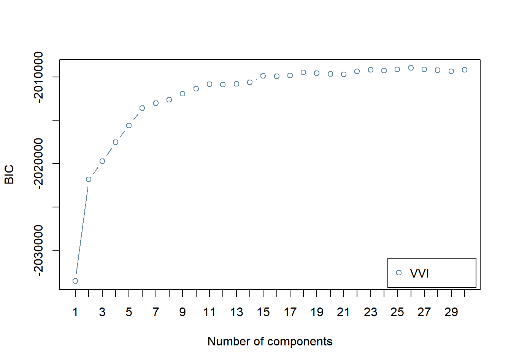
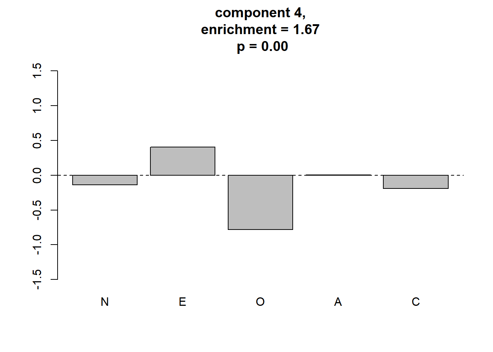
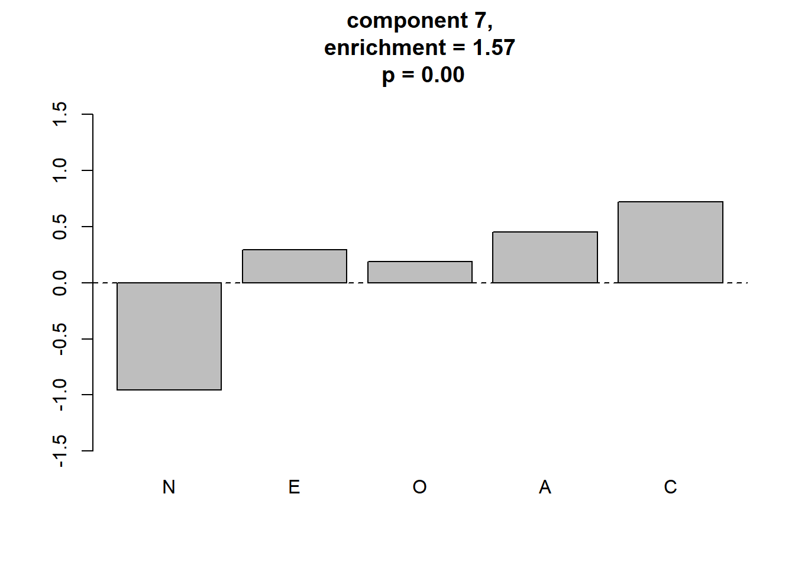
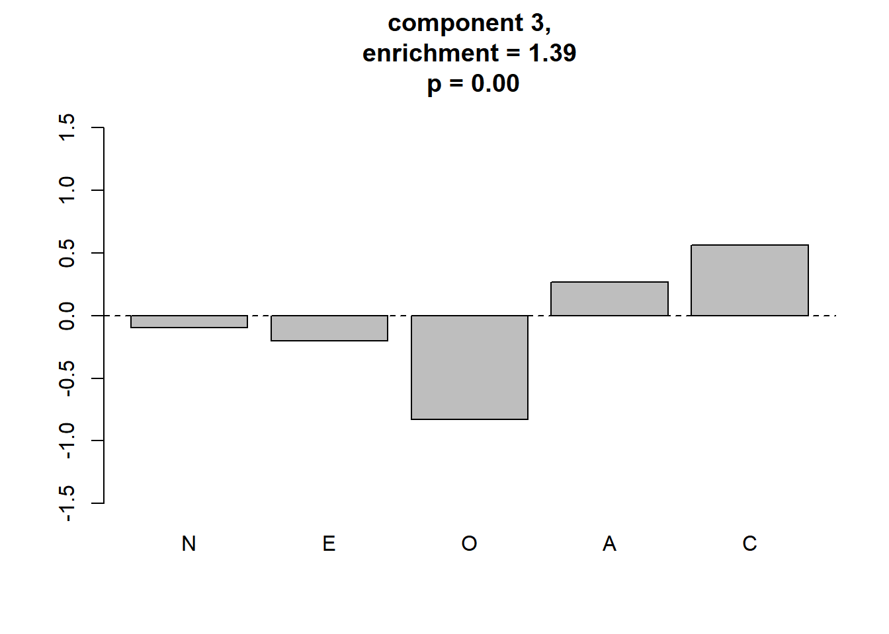
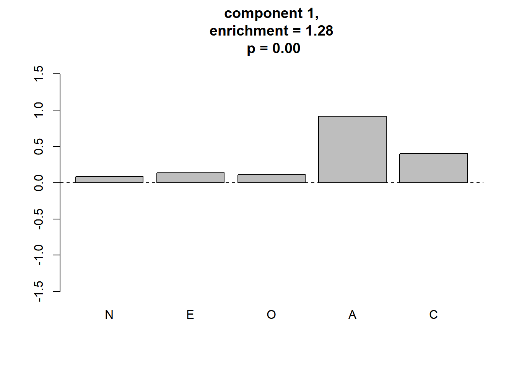

ここでは，実データ (Johnson-300) の解析1で Johnson-300データから出した因子スコアをGerlachらの解析を進め， GMM，ヌルモデルとの比較まで行います。
本ページで使用するパッケージがインストールされていない場合は，以下の コマンドをコンソールに入力してインスト―ルしてください。
install.packages("tidyverse")
install.packages("GGally")
install.packages("mclust")必要なパッケージを読み込みます。
library(tidyverse)
library(GGally)
library(mclust)こちらのページで解説した クラスター評価のための関数を読み出します。
source("functions_component_evaluation.R")このファイルはこちらからもダウンロードできます。
実データ (Johnson-300) の解析1で作成した 因子スコアデータを読み出します。
df_sc <- read.csv("C:/data/personality/fs_IPIP300.csv", header = TRUE)このcsvファイルはこちらからもダウンロードできます。
ここから先はGerlachの分析法 (ミニマム版)と同じです。
BICにより，コンポーネント数を選択します。
BIC <- mclustBIC(df_sc,
G = 1:30, # 候補となるコンポーネント数
modelNames = "VVI"
)
plot(BIC)
BICの結果はGerlach et al. (Fig.2a)と異なり，コンポーネント数が15を超えても減少しません。 (MClustの仕様ではBICが大きい方が良いモデルとなっていますが， Gerlachは通常のBICのよう小さい方が良いモデルとなるように 符号が逆になっています) 。
また，Gerlachらは単にBICが最小になるコンポーネント数を選ぶのではなく， ブートストラップ法を使った検定を行い，BICが有意に減少しなく なるコンポーネント数として，13を選択しています。 ここでは，そこまではしませんが， Gerlachらにならって，コンポーネント数は13を選択します。
BICで選択されたモデルの各コンポーネントの平均を求めます。
mod.GMM <- Mclust(df_sc, G = 13, modelNames = "VVI")
component.centers <- t(mod.GMM$parameters$mean)各コンポーネントの平均の座標の密度と，その座標におけるヌルモデルの密度を比較し，meaningful clusterであるか否か判定します。
なお，シャッフルの回数はGerlachらは1000回にしていますが， ここでは時間の短縮のため20回のみにしました。
res_ec <- eval_component(df_sc, component.centers,
n.shuffle = 20) ## Bandwidth selection...
## kernel dinsity estimation for original data...
## kernel dinsity estimation for shuffled data...
## ==print(res_ec)## $d.original
## [1] 0.007764698 0.006302772 0.007447713 0.010712670 0.002698642
## [6] 0.001968024 0.007676063 0.003686261 0.004310957 0.003226686
## [11] 0.003406452 0.003886907 0.001883929
##
## $d.null
## [1] 0.006047929 0.005874417 0.005373930 0.006414643 0.003055143
## [6] 0.002317019 0.004902053 0.004462055 0.004804516 0.004056767
## [11] 0.003185989 0.003792160 0.002053243
##
## $p.value
## [1] 0.00 0.05 0.00 0.00 1.00 1.00 0.00 1.00 1.00 1.00 0.10 0.25 0.80
##
## $enrichment
## [1] 1.2838607 1.0729187 1.3858968 1.6700336 0.8833111 0.8493776 1.5658872
## [8] 0.8261352 0.8972718 0.7953838 1.0691976 1.0249849 0.9175385meaningful clusterをプロットします。
plot_meaningful_cluster(res_ec, # 関数eval_componentの出力
component.centers,
p.threshold = 0.01,
enrichment.threshold = 1.25
) 4つのmeaningful clusterが同定されました。 Gerlachらの結果に対応付けると，順に3つめまでは“Reserved”, “Role model”, “Average”となりそうですが，値は異なりますし，4つ目は対応づけられません。
このようにGerlachらの結果が完全に再現できない原因は，GMMの詳細な方法にあると考えられます。 GMMのフィッティングに使ったMClustは，MClustは階層クラスター分析の結果を初期値に使いますが，Gerlachらが用いたPythonのライブラリ， scikit-learnのGMMではK-means法の結果が初期値の決定に使われています。 実データ (Johnson-300) の解析3では，RからこのPythonのライブラリを使ってみます。